From Egyptian soils to global markets.
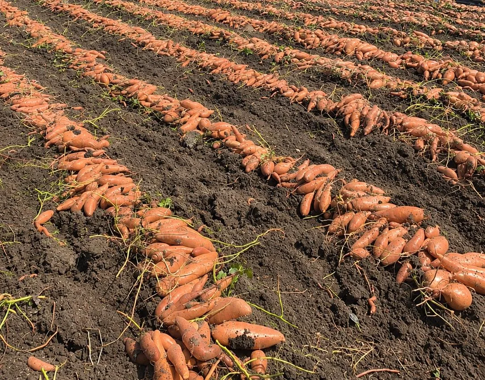
Fresh 4 U grows sweet potatoes on its own farms in Egypt and exports fresh fruit and vegetables to European and international buyers.
We grow what we ship.
Our sweet potatoes are grown and sourced directly from Fresh 4 U's own farms. Our own farms give us direct involvement in the cultivation and sourcing of our flagship product.
Other fresh produce is sourced through external suppliers according to product specifications, seasonal availability, and customer requirements.
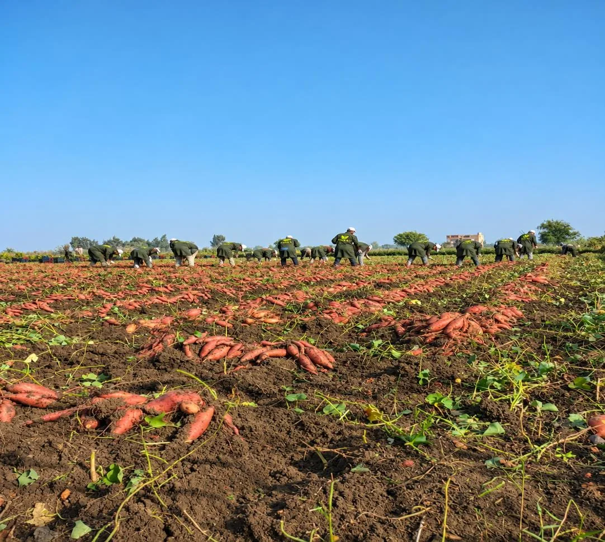
Own farms sweet potatoes
Partner suppliers all other produce
The journey in 20 seconds.
Two varieties. Eleven months of supply.
Season calendar
Beauregard August to May
Bellevue July to January
Beauregard from August to May. Bellevue from July to January.
Sizes by weight
- Small100–150 g
- Medium150–300 g
- L1300–450 g
- L2450–600 g
- XL600–900 g
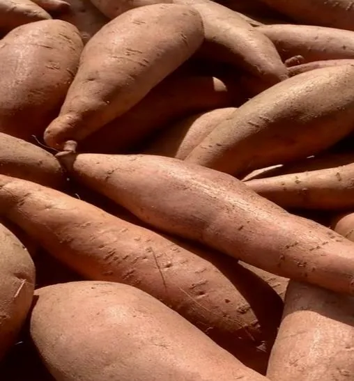
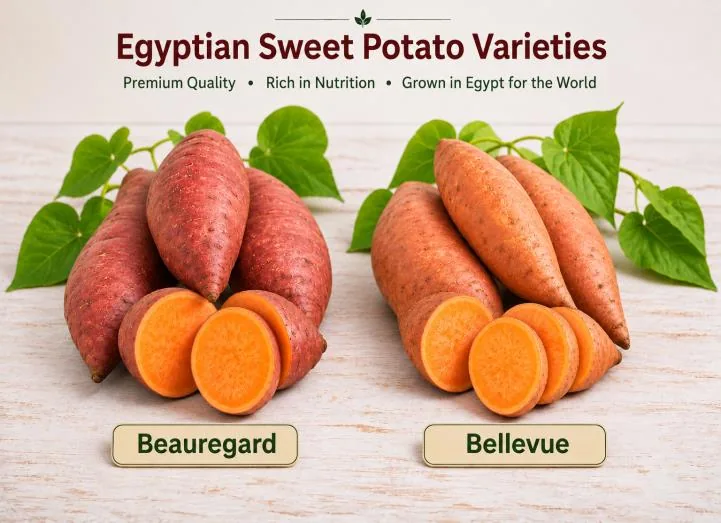
Cured 7–10 days or longer under controlled conditions, then washed, graded and packed to your specification.
Six steps between the field and the container.
-
Farming and harvesting
Careful cultivation and harvesting from our own farms.
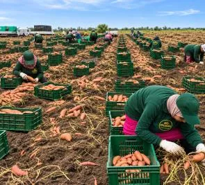
-
Sorting, grading and sizing
Selection and classification according to quality and size.
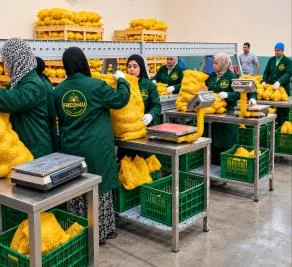
-
Curing
Controlled temperature and humidity.
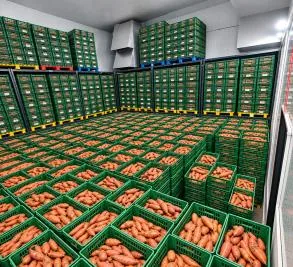
-
Washing
Washing after curing.
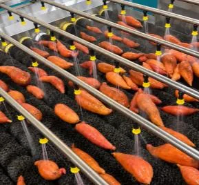
-
Packaging
Packing according to customer requirements.
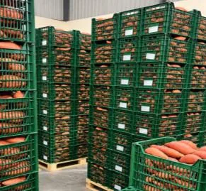
-
Container loading
Loading for export shipment.
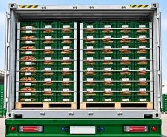
Packed the way your market wants it.
-
Carton boxes6 kg / 14 kg
-
Plastic crates6 kg / 14 kg
-
Sacks6 kg / 14 kg
-
Carton bins550 kg
-
Wooden bins550 kg
Other packaging on request.
More than sweet potatoes.
- Grapes
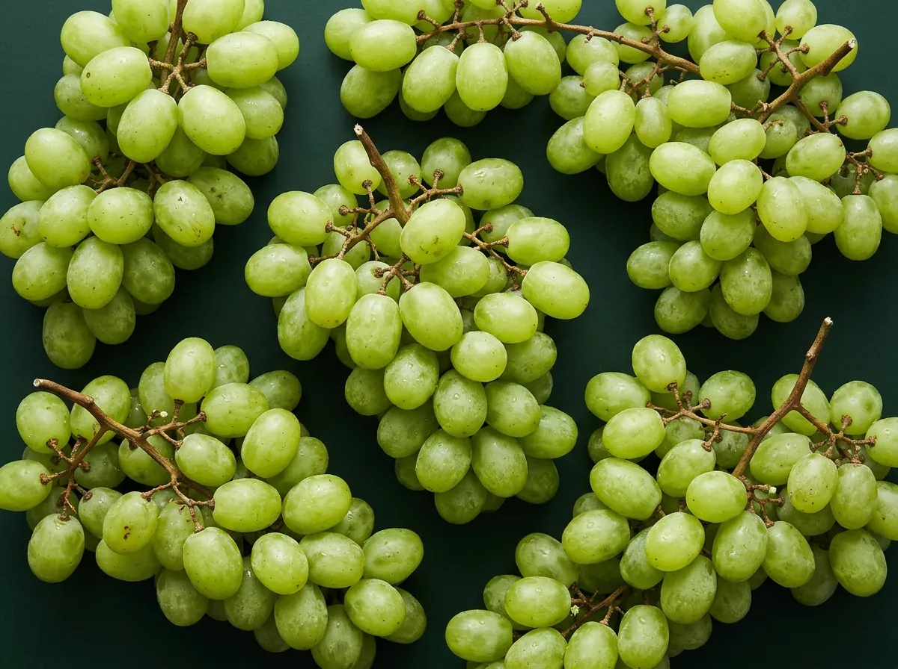
- Pomegranates
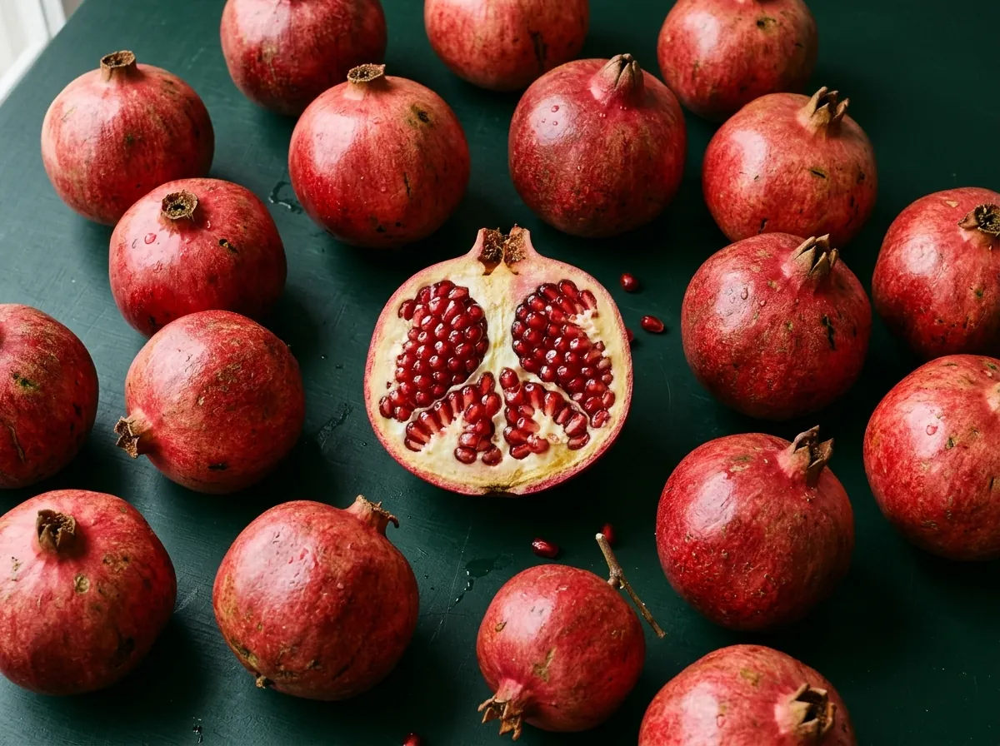
- Green onions
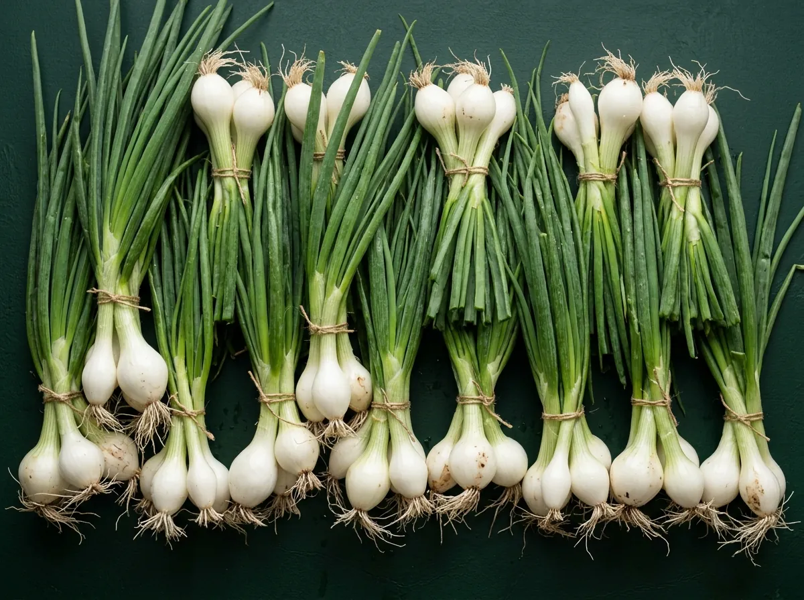
- Iceberg lettuce
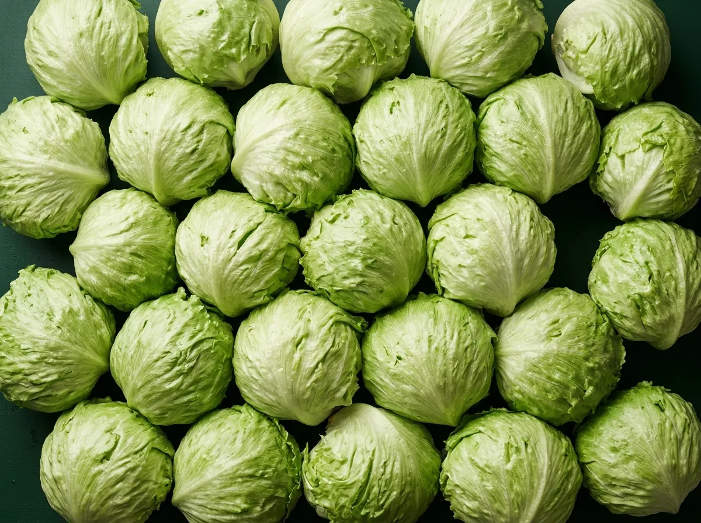
- Bell peppers
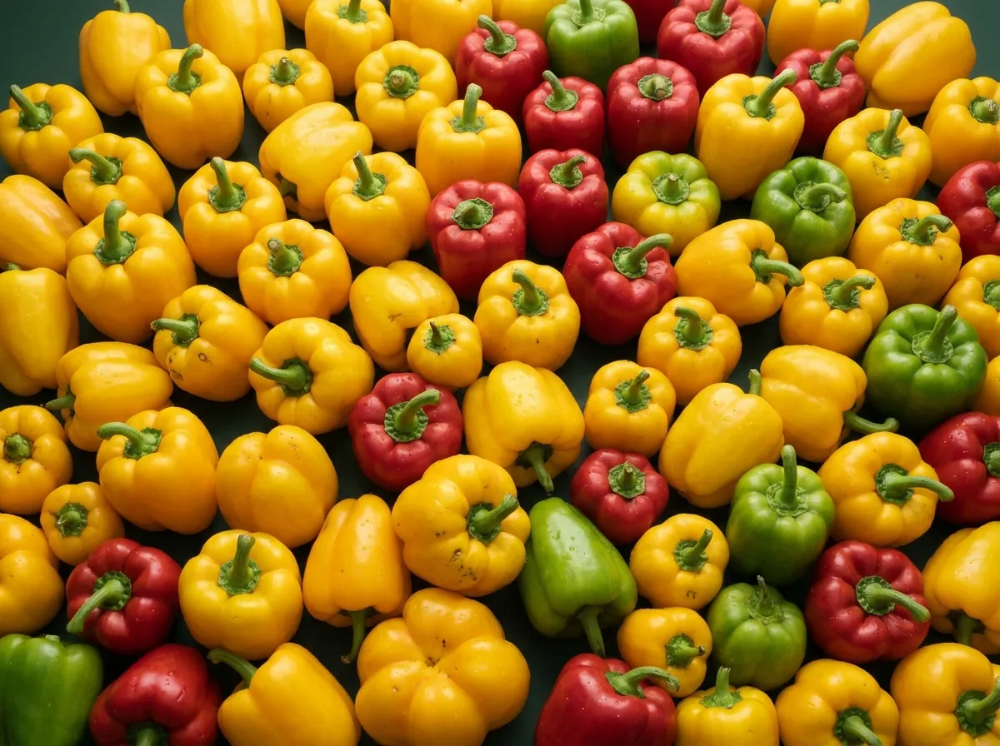
- Watermelon
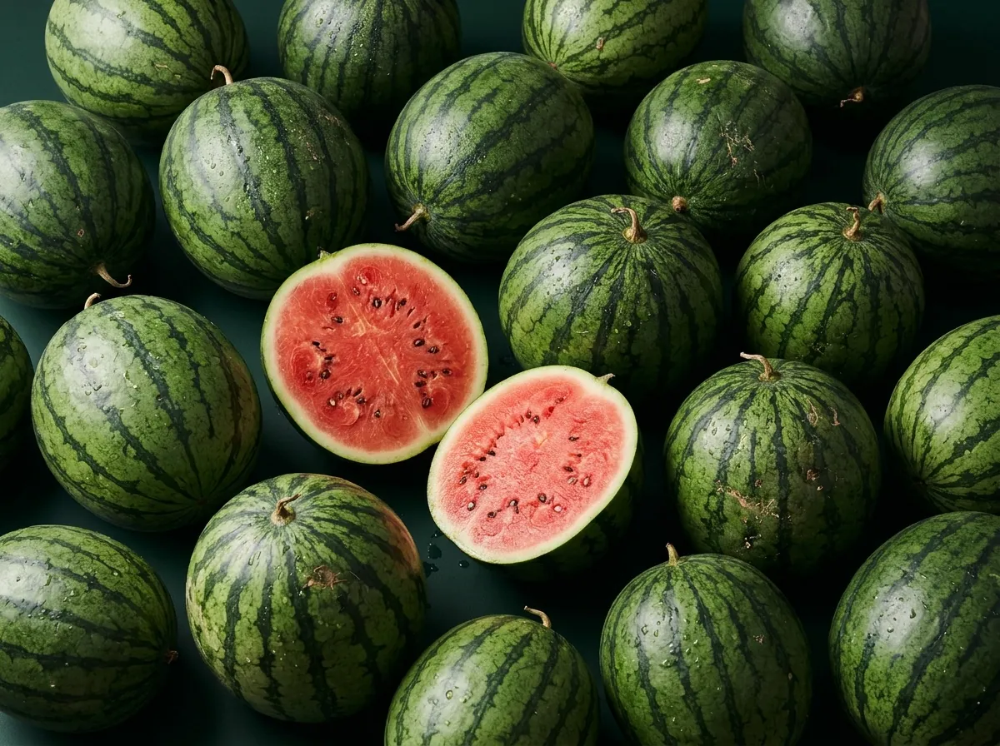
Also potatoes, garlic and oranges.
Quality starts with people.
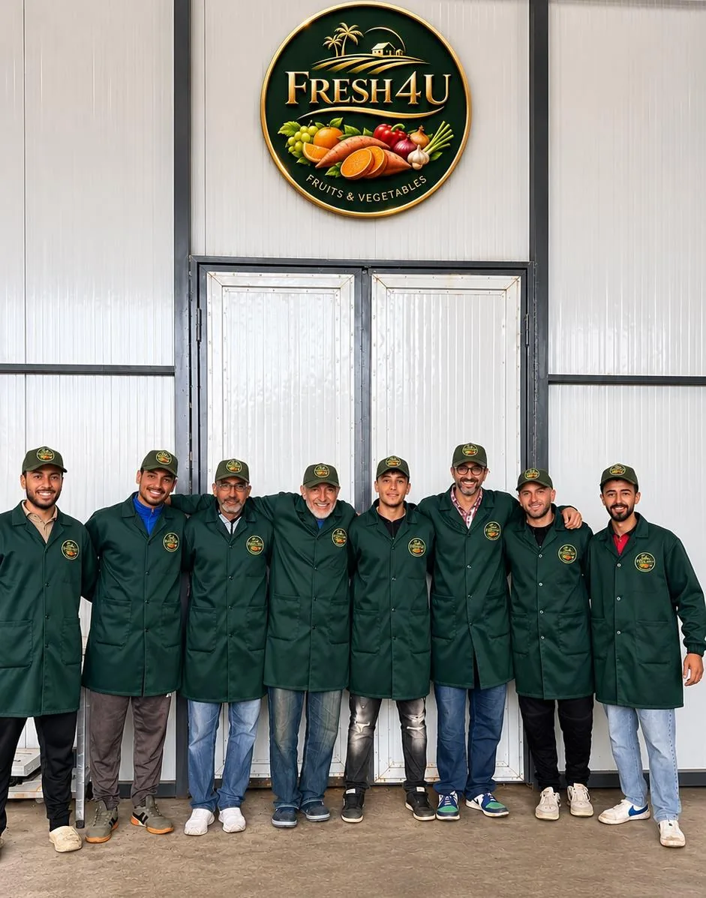
Product quality. Maintaining product quality through careful inspection and handling, in line with customer specifications.
Workers' hygiene and discipline. Our workers are an essential part of our operations. We emphasize personal hygiene, cleanliness, proper workwear, and discipline throughout the handling and packing process.
Food safety and handling. Maintaining clean working environments and appropriate handling conditions throughout product preparation and packing.
A clean, disciplined team is an essential part of product quality.
Certified in the name of Fresh 4 U.
- GLOBALG.A.P.Agricultural production standard
- GRASPSocial practice assessment
- ISOInternational management standards
- SMETAEthical trade audit
Certificates available on request.
Three ports. Your terms.
Temperature-controlled shipping
Suitable temperature and humidity conditions for sweet potato shipments. Prepared for refrigerated container transport.
Ports and container loading
Export through Alexandria, Damietta and Port Said ports. Careful container loading to support product protection and airflow.
Flexible terms
FOB CFR CIF
Shipping arrangements tailored to customer requirements.
Documents and traceability
Phytosanitary Certificate, Certificate of Origin and EUR.1. Product traceability from farm to shipment.
Shipping lines: Maersk, MSC, CMA, Hapag-Lloyd.
Why Fresh 4 U
- Own-farm sweet potato production. Sweet potatoes grown on our own farms, giving us direct involvement from cultivation to export preparation.
- Diverse product range. A selection of Egyptian fruits and vegetables to meet different market demands and customer requirements.
- Flexible sourcing. Own-farm production for sweet potatoes, alongside external sourcing for other fresh produce.
- Careful post-harvest handling. Dedicated processes for curing, washing, grading, sizing and packaging.
- Customer-focused export solutions. Packaging options and export arrangements tailored to customer specifications.